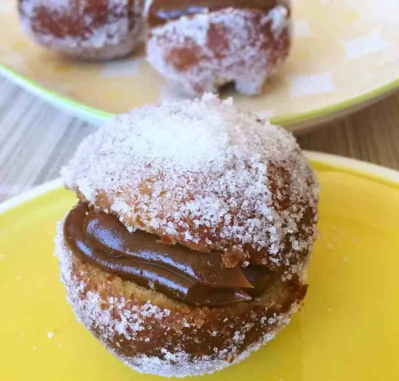

Bolas de Fraile

Descripcion
Las bolas de fraile tambien pueden ser llamadas como berlinesas o suspiros de monja, tienen una elaboracion sencilla y se pueden disfrutar solas o rellenas con dulce de leche, crema pastelera, chocolate, entre otros rellenos
Ingredientes
- Harina 0000 500 gramos
- Leche 100 ml
- Levadura fresca 25 gramos
- Huevos 2 Unidades
- Manteca Pomada 125 gramos
- Azucar 100 gramos
- Esencia de vainilla 1 cucharadita
- Ralladura de naranja 2 cucharadas
- Dulce de leche pastelero cantidad necesaria
- Azucar para rebozar cantidad necesaria
- Aceite para freir cantidad necesaria
Preparacion
- Mezclar la leche tibia y la levadura. Incorporar 2 cucharadas soperas de harina, mezclar bien y dejar reposar hasta que se forme una esponja.
- En un bol grande verter la harina , los huevos, el azúcar, la esencia de vainilla, la ralladura de naranja . Incorporar la esponja de levadura y comenzar a mezclar y después a amasar un poco .
- Añadir la manteca trabajando la masa para lograr que se integre bien la manteca . Obtendremos una masa muy pegajosa y elástica. No es necesario añadir más harina. Dejar reposar el bollo obtenido en el bol pincelado con aceite hasta que duplique su volumen, cubierta con un lienzo limpio, en un lugar tibio y reparado de corrientes de aire. Una vez leudada la masa, tomar porciones de unos 30 gramos aproximadamente y bollarlas.
- Disponer los bollitos en una placa y dejarlos levar hasta que dupliquen su tamaño.
- Verter aceite en un recipiente para freír y calentarla hasta 180º. Freír las bolas cuidando que se frian por ambos lados.
- Escurrir sobre papel absorbente e inmediatamente rebozar las bolas por azúcar.
- Una vez frías hacerles un corte para poder rellenarlos
- Rellenar las bolas de fraile o berlinesas con el dulce de leche repostero.